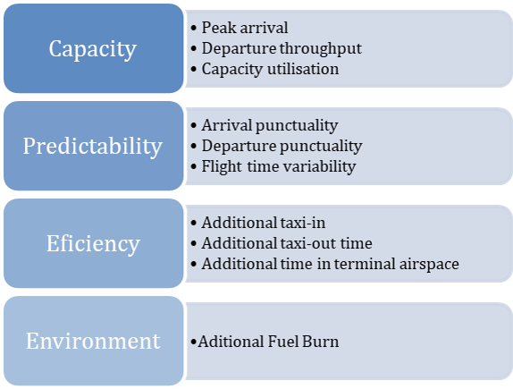

Executive Summary
Air transportation contributes a significant percentage to the global economy and is a key sector in Brazil and Europe. Despite the impact of COVID-19, the sector is set for growth in the long term. Within this context, air navigation plays a major enabler role. On one side, air navigation facilitates economic recovery by responding to varying demand by airspace users, with re-emerging or new network connections. On the other side, there is an increased focus on reducing the impact of aviation on the climate, through a continual reduction of environmental impacts due to operational constraints as an immediate measure. Other measures, like market-based mechanism, global uptake of sustainable aviation fuel, or novel engine techniques and aircraft design will require more time.
The Brazilian Department of Airspace Control (DECEA) Performance Section and the EUROCONTROL Performance Review Unit (PRU) jointly produced this second edition of the Brazil-Europe comparison. This bi-regional operational performance report uses commonly agreed metrics and definitions to compare, understand, and improve air the performance of navigation services (ANS). This report, and previous reports, are available online at https://ansperformance.eu/global/brazil/. It is also planned to augment the reporting with a supporting dashboard.
This second edition aims to consolidate the existing comparison process and expand its scope. This report updates the overview on both (Brazilian and European) air navigation systems; broadens the temporal scope, and adds new analyses. The report focuses on a subset of the eleven Key Performance Areas identified by the ICAO Global Air Navigation Plan (ICAO 2005, Appendix D).
While the primacy of Safety is fully recognised, the scope of this report is limited to operational ANS performance due to data constraints. In particular, Predictability, Capacity, Efficiency and Environment, as shown below.
This second report also introduces an initial approach to quantify the environmental impact of operational inefficiencies.
The comparison shows similarities and differences in the air navigation service provision and observed performance in both regions. Major take-aways of this report include:
- Overall, air navigation service provision is more fragmented in Europe with a higher number of local/national air navigation service providers and their respective control units. Integrated civil/military service provision is inherent to the organisation of DECEA and the Brazilian system, while in Europe a mix of co-location and integration exists, according to local/national arrangements.
- COVID measures strongly impacted air transportation demand in both regions and affected almost all air navigation system parameters.
- The difference between Brazil’s and Europe’s systems reacting to the seasons became more evident during the pandemic recovery. When not hit by another COVID-19 wave, the European region had greater variations in demand between the winter and summer seasons. The Brazilian flow recovered more gradually, showing a more continuous demand.
- Predictability in both systems degraded during and post COVID phase and is slowly recovering to pre-COVID-19 levels.
- Airport runway system capacities in both systems are designed to meet the traffic levels. Capacities at the Brazilian airports were increased in light of a change of methodology to determine these capacities and changed procedures.
- The European system showed a higher association between lower demand and increased efficiency considering additional taxi time, additional time in terminal airspace and flight time variability. Taxi performance in Brazil follows similar principles and operational procedures with no significant differences. The partial analysis of additional time in terminal airspace revealed that on average traffic in Brazil observed higher times during the arrival phase in 2021 suggesting a system-wide change. The level of variability of flight times reflected the overall trend.
- An initial approach to quantifying the emission benefit pool on the basis of the observed additional taxi-times was developed. Emissions and the improvement pool - next to operational constraints and inefficiencies - are dependent on the fleet mix operated at the different airports. This includes the role of the airport within the respective system. Larger hubs with a higher share of traffic - and in particular heavy aircraft operations - showed a higher contribution to the overall emission benefit pool.
This report will be updated throughout the coming years under the umbrella of the DECEA-EUROCONTROL memorandum of cooperation. It is also planned to establish a web-based rolling monitoring updated on a regular basis. Future editions will complement the data time series and support the development of further use-case analyses. The lessons learnt of this joint project will be coordinated with the multi-national Performance Benchmarking Working Group (PBWG) and the ICAO GANP Study sub-group concerned with the further development of the GANP Key Performance Indicators (KPIs).